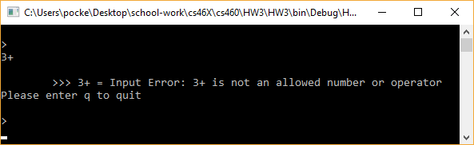
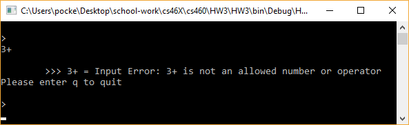

Homework Three
For this assignment we are to use Visual Studio to translate a Java postfix calculator program to C#. The purpose of this assignment is to get familiar with Visual Studio and to learn C#. Similar to Homework 2 we are to create a new branch name new-feature and do all the work on that, then merge the branch back into master.
The assignment can be found here
The source code can be found here
Getting Started
The first thing I had to do was download Visual Studio and get the project folder set up. The version of Visual Studio used for this was Visual Studio 2017 Community Edition. While setting it up I chose the .net framework with the web development, since that's what we're gonna focus on and had C# with it. Once I got it installed I added a project folder named HW3 and moved the javacode files into it. I added the javacode files to gitignore so they wouldn't be pushed to remote but I could still open the easily. After that I looked through the java files and ran them to get a feel for what it did, I decided that node.js would be the best place to start.
Node didn't have a whole lot in it so translating it wasn't hard. The code itself was almost exactly the same, however I had to add Using System at the top so I could make a variable with type Object. Next I worked on the StackADT.java file. First I renamed it to IStackADT to match naming conventions. I also double checked to make sure I was following the other conventions. The only major one I noticed, besides the I for interfaces, was that C# uses pascal case where the start of every word is capitalized in the method name. The code for the interface itself was also basic, just the method names and comments about what the methods are supposed to do.
With that done all I had left was to implement the LinkedStack itself, before I could work on the Calculator where most of the code was. The LinkedStack was similar to last 2. The code itself was fine just the naming conventions had to be changed. I did alter some of the methods though, I prefer methods that have one entrance and one exit so I assigned a variable to most that was initialized as null and got altered if it needed to be. After that I began translating the Calculator code itself.
The calculator code was interesting. Most of it was the same as the previous classes, a lot of the same stuff worked in both Java and C#. However once I got into the evaluate input method I had to start finding some workarounds. The major once I had to work was the scanner class in Java. C# doesn't have a scanner class, instead C# lets you read lines using the Console. What I ended up doing was reading the whole input into a variable, and then splitting that into an array. This allowed me to still move through the array one operator at a time. After that things ran smoothly except for the TryParse method. I'd never worked with out parameters so I kept running into an error saying not enough parameters. Once I figured that out I was able to get it to work smooth, and I found the out parameters to be a useful tool. It allowed me to check if the operator was a double, and if it was it returned it in a variable I could use, otherwise it was just false. With it working I just had to build and began testing it. I ran it through all the errors and got the expected behaviors, and also ran it through some calculations to make sure it implemented the math right. Below is a series of images showing the outputs from some of the tests.
 
